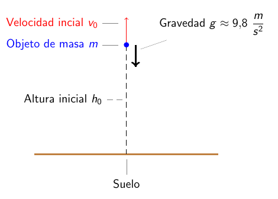

Ecuaciones diferenciales ordinarias
Ingeniería Civil

Modelos que usan EDOs de primer orden
Las EDs son una herramienta muy poderosa para modelar matemáticamente situaciones de la vida real. La razón detrás de esto es una de las interpretaciones de la derivada.
Si \(f(x)\) es una función que representa alguna cantidad, entonces \(f'(x)=\dfrac{df}{dx}\) representa la tasa de cambio de dicha cantidad respecto a \(x\).
Si \(s(t)\) describe la posición de un objeto en el tiempo \(t\), entonces \(\dfrac{ds}{dt}(t)\) describe la tasa de cambio de la posición respecto al tiempo: la velocidad.
Si \(P(t)\) describe la población de cierto país en un determinado tiempo \(t\) entonces \(\dfrac{dP}{dt}(t)\) es la tasa a la cual cambia la población con respecto al tiempo
Si \(T(t)\) es la temperatura de una habitación en el tiempo \(t\) entonces \(\dfrac{dT}{dt}(t)\) es la tasa a la cual varía la temperatura con respecto al tiempo.
Aplicaciones a la economía
El valor de reventa de cierta maquina decrece a lo largo de un período de 10 años a una tasa que depende de la antiguedad de la máquina. Cuando la maquina tiene \(t\) años de antiguedad, la tasa a la que varía su valor es \(220(t-10)\) dolares por año. Exprese el valor de la máquina como una función del tiempo y de su valor inicial. Si el precio inicial de la máquina es de $12.000 ¿cuánto valdrá luego de 10 años?
Aplicaciones a la economía
Una tienda, que puede mantener como máximo 100 unidades de cierto producto en su inventario, determina que dicho producto se vende a una tasa semanal del 10% de la capacidad total disponible disponible en esa semana. Suponga que inicialmente la tienda cuenta con 75 unidades del producto
Escriba un problema de valor inicial para el número de unidades \(N(t)\) en inventario luego de \(t\) semanas.
Resuelva el problema de valor inicial antes encontrado.
¿Cuánto tiempo le toma a la tienda vender todo su inventario?
Dinámica de poblaciones
De acuerdo a Thomas Malthus1, la tasa a la cual la población de un país crece en un instante \(t\) es proporcional a la población del país en ese instante.
Si denotamos por \(P(t)\) a la población del país al instante \(t\), entonces la tasa de crecimiento en dicho instante está dada por \(\dfrac{dP}{dt}(t)\), luego la proposición de Malthus se puede escribir como \[\frac{dP}{dt}=kP,\] donde \(k\) es una constante de proporcionalidad.
Este modelo es usualmente utilizado para modelar el crecimiento de pequeñas poblaciones en períodos cortos de tiempo, como por ejemplo, una colonia de bacterias en un plato de Petri.
Una placa de Petri contiene inicialmente una colonia de \(1000\) bacterias. Cuando \(t=1\) se mide que el número de bacterias es de \(1500\). Si la tasa de crecimiento de la colonia es proporcional al numero de bacterias \(P(t)\) en ésta, determine el tiempo necesario para que la colonia se triplique en cantidad.
En este caso el PVI es \[\left\{ \begin{aligned} \frac{dP}{dt}&=kP\\ P(0)&=1000\\ P(1)&=1500. \end{aligned} \right.\]
La solución del PVI es \(P(t)=1000e^{kt}\) pero como \(1500=P(1)=1000e^{k\cdot 1}\) obtenemos que \[k=\ln \frac{3}{2}.\] Finalmente, la población se triplicará cuando \(P(t)=3000=1000e^{kt}\) lo que nos dice que esto ocurre cuando \(t=\frac{1}{k}\ln 3=\frac{\ln 3}{\ln\frac32}\approx 2.7.\)
Dinámica de poblaciones
El modelo antes visto no considera situaciones en las que hay tasas de natalidad, mortalidad, inmigración, emigración, etcétera.
Una modificación simple al modelo se puede hacer al incorporar tasas de inmigración \(r_i\) y emigración \(r_e\) de la siguiente forma \[\frac{dP}{dt}=kP+r_i-r_e.\]
Para incorporar una tasa de natalidad per cápita \(\beta\) y una tasa de mortalidad per cápita \(\delta\), Malthus propone que \(k=\beta-\delta\) de donde obtenemos el siguiente modelo mas general \[\label{pob-ecu1} \left\{ \begin{aligned} \frac{dP}{dt}&=(\beta-\delta)P+r_i-r_e\\ P(0)&=P_0 \end{aligned} \right.\]
En general las tasas de natalidad y mortalidad varían con el tiempo y con el tamaño de la población, por lo que en realidad \(\beta\) y \(\delta\) son funciones \[\beta=\beta(t,P)~\text{y}~\delta=\delta(t,P),\] lo que deja con una EDO no-lineal y bastante difícil de resolver en general. El matemático belga Pierre Verhulst2 propuso un modelo en que la tasa de mortalidad es constante y que la tasa de natalidad es una función lineal de \(P\), es decir \[\beta(t,P)=\beta_0-\beta_1P(t),\] de donde el modelo sin migración queda de la forma \[\left\{ \begin{aligned} \frac{dP}{dt}&=(\beta_0-\delta-\beta_1P)P\\ P(0)&=P_0. \end{aligned} \right.\]
Dinámica de poblaciones
Si denotamos por \(r=\beta_0-\delta\) y \(K=\dfrac{\beta_0-\delta}{\beta_1}\), entonces este último modelo se puede escribir de la forma \[\label{pob-log1} \left\{ \begin{aligned} \frac{dP}{dt}&=\frac rKP(K-P)\\ P(0)&=P_0. \end{aligned} \right.\]
Esta última ecuación se conoce como ecuación logística de Verhulst y las cantidades que ahí aparecen tienen la siguiente interpretación
El valor de \(K\) representa la capacidad máxima del sistema, también denotada como “población límite”.
La constante \(r=\beta_0-\delta\) representa una tasa neta de crecimiento (puede ser negativa).
El producto \(P(K-P)\) se puede interpretar como la interacción entre la población actual y el “espacio disponible”.
(Propagación de una enfermedad). En una comunidad cerrada con \(P_T\) habitantes, la tasa de contagio de cierta enfermedad es proporcional a la interacciones entre individuos sanos y enfermos. Determine y resuelva una ecuación que modele la propagación de la enfermedad.
Si denotamos por \(P(t)\) al número de personas contagiadas al instante \(t\), lo que nos dicen es que \[\frac{dP}{dt}\varpropto P(P_T-P),\] donde \((P_T-P)\) es la cantidad de individuos sanos3. Es decir tenemos que \[\frac{dP}{dt}=kP(P_T-P),\] otra ecuación logística. \(\blacksquare\)
Leyes de movimiento de Newton
De acuerdo a la segunda ley de Newton, tenemos que la sumatoria de fuerzas sobre un objeto es igual a la masa del mismo por su aceleración, es decir \[F_{\text{neta}}=ma.\]
La aceleración es la tasa a la cual cambia la velocidad, por lo que si \(v\) representa la velocidad de la masa podemos escribir \[a=\dfrac{dv}{dt}=\dot v,\] por lo que la segunda ley de Newton es una ecuación diferencial de la forma \[m\dot v=F.\]
Objeto en caída libre

Objeto en caída libre
Similarmente, tenemos que si \(h\) denota la altitud del objeto, entonces \(v=\dot h\), por lo que tenemos la ecuación diferencial para determinar la altura del objeto al instante \(t\) dada por \[\dot h=v=v_0-gt,\] integrando obtenemos que \[h(t)=h_0+v_0t-g\frac{t^2}{2},\] donde \(h_0=h(0)\) es la altura inicial del objeto.
En otras palabras, la posición y la velocidad de la masa están completamente determinadas por su posición y velocidad inicial.
Se dispara verticalmente un balón desde el suelo con una velocidad inicial de 49 m/s. Determine la altura máxima del balón y el tiempo que toma en regresar al suelo.
Usando la solución obtenida, tenemos que \(v(t)=49-9.8t,\) y \(h(t)=49t-4.9t^2\). Para resolver este problema, debemos interpretar en términos matemáticos que significa alcanzar la altura máxima. La clave es notar que el balón cambia de dirección al llegar al máximo, es decir pasamos de una velocidad positiva (se mueve hacia arriba) a una negativa (se mueve hacia abajo), en otras palabras, la condición es que la velocidad sea exactamente 0. \[v(t)=0 \Rightarrow 49-9.8t=0 \Rightarrow t=\frac{49}{9.8}=5.\] Es decir, luego de 5 segundos, el balón alcanza su altura máxima. Para determina la altura, basta con calcular \(h(5)=h(t)=49\cdot5-4.9(5)^2=122.5\) metros. Para determinar cuanto tiempo tarda el balón para regresar al suelo, notamos que dicha situación ocurre cuando \(h(t)=0\) (el balon llega al nivel del piso), es decir \[h(t)=0 \Rightarrow 49t-4.9t^2=0 \Rightarrow t=0~\text{ó}~t=10.\] La solución \(t=0\) representa el momento en que se disparó el balón, y la solución \(t=10\) representa el tiempo que demora el balón en impactar el suelo.
Leyes de Newton
Veamos que pasa si suponemos que aparte de la gravedad, tenemos una fuerza de resistencia al movimiento: fuerza de roce, es decir \[F_{\text{neta}}=F_{\text{gravedad}}+F_{\text{roce}}.\] ¿Cómo se modela matemáticamente la fuerza de roce?
La fuerza de roce se opone al movimiento, es decir debe tener el signo opuesto al signo de la velocidad, y habitualmente se supone que es de la forma \[F_{\text{roce}}=-kv^p,\] donde \(k>0\) y \(p\geq1\) son constantes empíricas, siendo los casos \(p=1\) y \(p=2\) los mas usados.
Cuando \(p=1\) la ecuación de Newton queda \[m\dot v=-mg-kv\Leftrightarrow \dot v+\frac km v=-g.\] La cantidad \[\rho:=\frac km\] se denota coeficiente de roce.
Para resolver la EDO utilizamos el factor integrante \(e^{\rho t}\) y obtenemos que la solución general está dada por \[v(t)=-\frac g\rho+Ce^{-\rho t}.\] Si consideramos que la velocidad inicial del objeto es \(v(0)=v_0\), obtenemos la fórmula para \(v(t)\) \[v(t)=\left( v_0+\frac g\rho \right)e^{-\rho t}-\frac g\rho.\]
Leyes de Newton
Resuelva el ejemplo anterior, suponiendo que el balón tiene un coeficiente de roce con el aire de \(\rho=0.04\).
Utilizando la fórmula recién calculada, obtenemos que \[v(t)=294e^{-\frac t{25}}-245.\] Además si recordamos que \(\dot h=v\), obtenemos que \[h(t)=7350-245t-7350e^{-\frac t{25}}.\] Ahora, para calcular la altura máxima imponemos la condición \(v(t)=0\), y encontramos que \[t_{max}=25\ln\frac{294}{245}\approx 4.56 \text{ segundos},\] de donde la altura máxima es \[h_{max}=h(t_{max})\approx 108.3 .\]
En cuanto al tiempo de retorno, este es mucho mas complicado de calcular que en el caso anterior, ya que si bien la condición \(h(t)=0\) sigue siendo correcta, el resolver dicha ecuación es algo no trivial, y que escapa a las técnicas de este curso. Una manera de hacerlo, es mediante el uso de un computador (técnicas numéricas), de donde obtenemos que \[t_{\text{impacto al suelo}}\approx 9.41 \text{ segundos}.\] Observar que \(9.14-4.56=4.85\), es decir, el tiempo de descenso es mas largo que tiempo de ascenso, confirmando que cuando hay roce, nuestra intuición puede ser incorrecta.
Ley de enfriamiento de Newton
De acuerdo a Newton, la tasa a la cual cambia la temperatura de un objeto es proporcional a la diferencia de la temperatura del objeto y el medio en el cual está sumergido, es decir, si denotamos por \(T(t)\) a la temperatura del objeto al instante \(t\), y \(T_M\) a la temperatura del medio, tenemos que \[\frac{dT}{dt}\varpropto T-T_M,\] de donde tenemos que \[\frac{dT}{dt}=k(T-T_M)\] Una simplificación que se suele hacer, es suponer que \(T_M\) es constante.
Una taza de café se enfría según la ley de Newton. Si inicialmente el café estaba hirviendo (\(T(0)=100^\circ\)) y la temperatura ambiente es de 13°, estime la temperatura del café luego de 2 minutos si es que \(k=-1\).
De acuerdo al modelo, tenemos que la temperatura del café se puede modelar mediante la ecuación diferencial \[\left\{ \begin{aligned} \dot T&=-(T-13)\\ T(0)&=100 \end{aligned} \right.\] Esta es una ecuación lineal que tiene como solución \(T(t)=13+Ae^{-t}\). Imponiendo la condición \(T(0)=100\), obtenemos que \[T(t)=13+87e^{-t}.\] Concluimos diciendo que la temperatura luego de 2 minutos es \(T(2)=13+87e^{-2}\approx 24.77^\circ\).